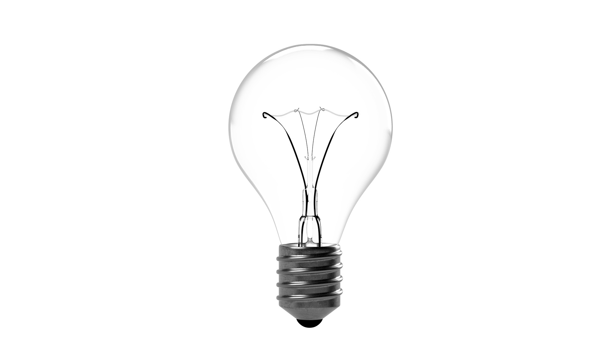
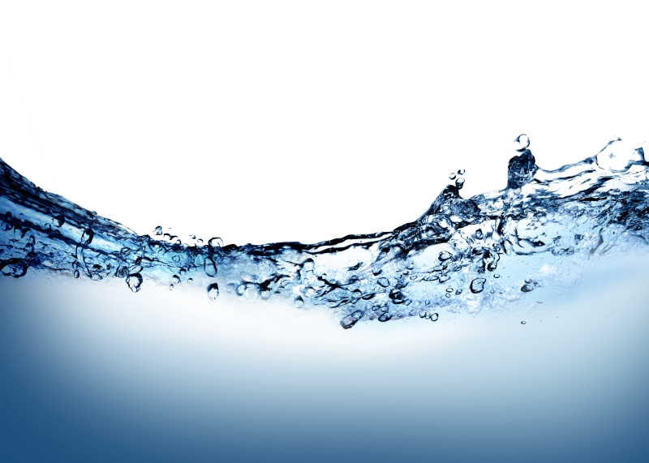
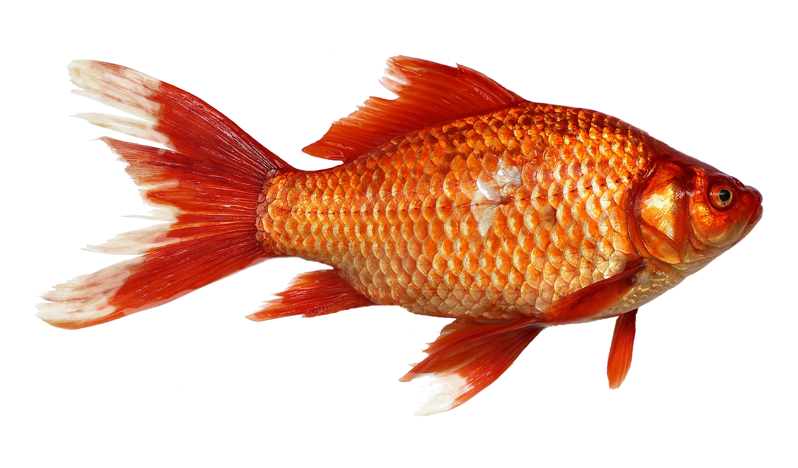

For my first GIMP image I decided to start with something simple to ease myself into the GIMP software, so I decided to make a meme. Using Professor Reed's image that I found on google, I downloaded the file including a random background that I also found on google.
- Opening Professor Reed's image, I used the "Lasso" tool to do a basic highlight of the area I am going to crop, which is his head and body.
- Then, I used the "Mask Tool" to further refine my crop cut of the professor's parts by choosing between the pencil and eraser tool to perfectly shade the curves of Professor Reed.
- Once I am done with the shading, I can turn the masking tool off and it reveals the selected section in which I have cropped. Now I go edit>copy the image and I paste it on the tab with my other image
- Using the move and resize tool, I adjust Professor Reed's pic to fit snuggly in the center and I used the 'Text Tool' to add the text for the meme. Settings for the font and size of text is in the tab.
For my second GIMP image I did it on my cat, Sam. I stepped up the difficulty for this image by needing to remove the time stamp on the corner of the image and blurring out the background to put focus on Sam himself; also I added a bit of 'make-up' on Sam, and his signature on the corner to replace the time-stamp.
- First, I removed the time stamp. To do this I used the "Clone Tool" with a brush tip which basically allows me to select an area of the image and using the color code of that area, I can use my mouse to "stamp-out" or color over the time-stamp to make it "disappear" but in actuality I basically just color over it to match the surrounding background. This is also how I alter the facial features of Sam, I used the Clone Tool to get the color code of a part of his face and then colored over some facial distractions.
- Next is the blurred background. To do this I duplicated the layer of image on the right. Then using the "Select Tool" that I learned from the first image, cropped out Sam from the background and then copy-pasta. I then go and create a new layer in the layers tab and paste the cropped image on to that layer. For the the layer that I duplicated, that is going to be the background in which I will blur out.
- Under the 'Filter' tab on the top, I selected the 'Blur' option and adjust it until the preview show me the level of blur that pleases me. Then, i right click on the background layer and select 'Mask layer', which basically produces another layer in which you will use to shade out the layer of Sam that I cropped out.
- To shade out the layer of Sam that I cropped out, I used the "Brush Tool" where I adjust the size and tip below and I started shading the blurred image. As I do that, the underneath layer of the cropped picture will show. When I finish shading the entire portion of Sam, the unblurred, cropped picture of him should show and he will be surrounded by the background I blurred out.
- Lastly, to add Sam's signature I basically utilize the "Text Tool" from the first image.
For my third GIMP image, I will take 3 pictures and blend them together to make a final piece. Here, I will ultilize some new techniques such as the 'multiply' function while applying some techniques from my GIMP image 2 such as the masking, layer, and brush tools.
- First, I open the lightbulb because that is going to be my base image. Then, using the basic image changing tools like resize, rotate, and scale, I got the light bulb to tilt as if it was placed on the table. To fill in the transparent area created by tilting the lightbulb, I create a new white layer and I right lick to flatten both layers into one.
- Next, I drag and drop the water from my downloads onto the lightbulb and scale it with the basic image tools that I used for the lightbulb. Then I selected 'multiply' in the mode on the layers tab to blend both the water and the lightbulb. Using the opacity option under that, I can adjust how see through the water appears.
- Now I am gonna trim the water so that it fits inside the lightbulb. To do this I will add layer mask white full opacity. then, using the paint brush as I did for Sam, start brushing away the water outside the lightbulb until it looks like the water is completely in the lightbulb.
- To add in the goldfish, is the same way I added the wave, drag and drop, resize, rotate and get it comfy in the image. Finally add the 'multiply' function again to blend the fish in.
- Finally to add the reflection of the lightbulb beneath it, i right click one of the layers on the right and select 'flatten' image to squish it into basically one final picture, doing this allows me to copy this image entirely. Then I copy this layer with edit>copy, and I waste it as a new layer. Then using the 'flip' tool in the tools, I flip one of the layers and I use the 'multiply' mode to blend both layers. I then use the move tool to arrange the flipped image to the button and the 'opacity' function to fade it. Finally I use the "eraser" tool to crop out most of the reflection until I get that small part
- And I am done, just finishing touches I can flatten my image again into one final piece and under the "colors" tab I can adjust the Hue, Brightness, and saturation of the image to make the colors more vibrant and stunning.
Click on the images to enlarge.
Original GIMP'ed  
Access to all images and GIMP files can be found by clicking this link here: GIMP Dropbox